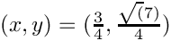
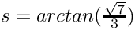
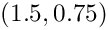
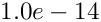

In this document we show how to add internal boundaries and create connections among them in 2D unstructured meshes with oomph-lib. The mesh generation procedure is performed by using Jonathan Shewchuk's Triangle. This tutorial complements the discussion in another tutorial where we illustrated how to build oomph-lib meshes using the TriangleMeshPolygon and TriangleMeshClosedCurve objects.
Additionally, we show via examples
- how to connect
TriangleMeshCurveSectionobjects - how to add addition holes and extra regions, i.e. regions not defined via
TriangleMeshPolygonorTriangleMeshClosedCurveobjects
Adding internal boundaries
The TriangleMeshOpenCurve object
An internal boundary is defined in oomph-lib by the object TriangleMeshOpenCurve. We can create and add as many internal boundaries as we need for defining our domain, see figure below.
TriangleMeshOpenCurve object allow us to define domains with internal boundaries. The internal boundaries are shown in red. Notice the connections of the internal boundaries with other boundaries. The connections are shown with filled small circles. The TriangleMeshOpenCurve object allows the creation of complex internal boundaries as a combination of TriangleMeshPolyLine and/or TriangleMeshCurviLine objects. In order to create a TriangleMeshOpenCurve it is necessary to create a Vector of TriangleMeshCurveSection objects that define the TriangleMeshOpenCurve, see figure below.

TriangleMeshOpenCurve, a) A TriangleMeshOpenCurve defined as a combination of two TriangleMeshPolyLines (in blue) and a TriangleMeshCurviLine (in red). b) A TriangleMeshOpenCurve can also be defined as just one TriangleMeshCurveSection, in this case a TriangleMeshPolyLine. c) A TriangleMeshOpenCurve defined as a combination of a TriangleMeshPolyLine and a TrianglesMeshCurviLine. Creating connections among current boundaries in the domain and with internal boundaries
Any internal boundary can be connected (via its ends) to any other boundary currently in the domain.
It is important to note that there are four different types of connections:
- Connection between a
TriangleMeshPolyLineand aTriangleMeshPolyLine - Connection between a
TriangleMeshCurviLineand aTriangleMeshPolyLine - Connection between a
TriangleMeshPolyLineand aTriangleMeshCurviLine - Connection between a
TriangleMeshCurviLineand aTriangleMeshCurviLine
The next figure shows an sketch of the different types of connections.

TriangleMeshPolyLine and a TriangleMeshPolyLine. b) Connection between a TriangleMeshCurviLine and a TriangleMeshPolyLine. c) Connection between a TriangleMeshPolyLine and a TriangleMeshCurviLine. d) Connection between a TriangleMeshCurviLine and a TriangleMeshCurviLine. Connections to TriangleMeshPolyLine can only be made by using existing vertices of the destination TriangleMeshPolyLine. Conversely, connections to TriangleMeshCurviLine can be made by specifying the position along the TriangleMeshCurviLine. The
connection point is identified by the TriangleMeshCurviLine's intrinsic coordinates. The figure below shows the case when a connection with a TriangleMeshPolyLine is possible.

TriangleMeshPolyLine it is necessary that the destination boundary has a vertex on the connection point. a) There is no vertex for connecting to the destination TriangleMeshPolyLine. b) There is a vertex in the destination TriangleMeshPolyLine to receive the initial end of the source boundary. Example: A domain with multiple internal boundaries and connections
We will show how to add internal boundaries and how to create connections among them by using the same example as in another tutorial.
A sketch of the domain is shown on the next figure. The domain has seven boundaries, two of which define the outer boundary and the other five define internal boundaries.

Definition of the domain/mesh
The following code is extracted from the Problem constructor and shows how to create the domain/mesh.
Defining the outer boundaries
The first task is to define the outer boundary which we represent by a TriangleMeshClosedCurve comprising two TriangleMeshPolyLines.
Note that we defined additional vertices along the two boundaries to allow the creation of connections to the outer boundary, see figure below.
Defining internal boundaries
We create a Vector of five TriangleMeshOpenCurves which will represent the internal boundaries.
Simple internal boundaries without connections
Our domain has two unconnected internal boundaries: a straight line, represented by a TriangleMeshPolyLine and a curve line represented by a TriangleMeshCurviLine.
Adding an internal boundary connected to an outer boundary
We need to add three more internal boundaries which have connections with the outer boundary and with some internal boundaries; see the sketch of the domain.
In order to connect an internal boundary with any other boundary in the domain it is necessary to specify the following:
- Is the initial or the final end of the boundary the one that we want to connect?
- Do we want to connect the boundary with a
TriangleMeshPolyLineor with aTriangleMeshCurviLine? - If we want to connect with a
TriangleMeshPolyLinethen we need to identify the corresponding vertex number to which we want to connect. If we want to connect with aTriangleMeshCurviLinewe need to identify the corresponding intrinsic coordinate on the curve for connection.
on the curve for connection.
Consider the creation of the internal boundary 4 shown on the sketch of the domain. This is an example of connecting a TriangleMeshCurviLine with a TriangleMeshPolyLine (the outer boundary). In this case both ends of the TriangleMeshCurviLine are connected so we need to use the interface for connecting the initial and the final ends of the boundary to a TriangleMeshPolyLine. There is only one thing left to identify, the vertex number of the destination boundary to which we want to connect. By looking at figure 1.5 we see that these values are vertex #3 for the initial end and vertex #1 for the final end. Once identified, we perform the connection as follow:
- Create the internal boundary as usual
- Specify connections using the destination boundary and the vertex number
- Finally, create the
TriangleMeshOpenCurveobject as usual
Adding an internal boundary connected with another internal boundary
Boundary 5, a straight line connected to the outer boundary and to an internal boundary (the one that we created on the previous step).
The initial end of the boundary is connected to the outer boundary therefore we need to identify the vertex number to which it is connected; by looking at the sketch of the domain we see that the destination vertex number is 1. The final end is connected with a TriangleMeshCurviLine therefore we need to specify the intrinsic coordinate in the object where we want to connect (the intrinsic coordinate is the arc-length along the circle).
Adding an internal boundary connected with another internal boundary (the last one from our example)
The fifth internal boundary is connected to two internal boundaries. The initial end of the new internal boundary is connected to a TriangleMeshPolyLine and the final end is connected to a TriangleMeshCurviLine. The vertex number for connection with the TriangleMeshPolyLine was established in the definition of the previous internal boundary, vertex #1. The circles defining boundaries 4 and 6 meet each other at  which corresponds to the intrinsic coordinate  on the TriangleMeshCurviLine object representing boundary 4.
Build the mesh
We build the mesh specific parameters using a TriangleMeshParameters object.
Defining additional holes and regions
It is possible to define holes in the domain using the methods discussed in another tutorial; where we explained how to create holes by using closed curves. Holes could also be created by specifying additional parameters on the TriangleMeshParameters object. The specification of regions or layers follows the same principle.
Defining additional holes
For defining holes it is only necessary to specify a point that lies inside a closed boundary (created by the connection of internal open boundaries). For example, the region bounded by boundaries 4, 5 and 6 can be turned into a hole by specifying the coordinate , see figure below.
Defining regions
The definition of regions follows the same principle that defining holes, it means, one only need to specify the coordinates of a point that lies inside a region. If we would like to define the region showed on light grey on the figure below we use the method add_region_coordinates of the TriangleMeshParameters object. You can specify any region id for the defined region.

By default the complete domain belongs to region zero. Therefore, one could leave parts of the domain without a defined region or explicitly define all the regions on the domain. NOTE: Be sure to use the region ids when documenting the solution by its specified regions.
Comments and exercises
- Create two new internal boundaries without connections, one using a
TriangleMeshPolyLineobject and other using aTriangleMeshCurviLineobject.
- Define a new vertex on the new
TriangleMeshPolyLineand create a connection to that vertex.
- Once one performs a connection to a
TriangleMeshPolyLineor to aTriangleMeshCurviLinethere is an internal checking on the connection vertices coordinates for theTriangleMeshPolyLineand on the connection intrinsic coordinate for theTriangleMesheCurvilinecase, they must be close enough in order to allow the connection. The tolerance values aretolerance_for_vertex_connection=  for theTriangleMeshPolylinecase andtolerance_for_zeta_connection= for theTriangleMeshCurvilinecase. One can explicitly define the allowed tolerance by adding an extra argument when using the methodsconnect_initial_vertex_to_polyline,connect_final_vertex_to_polylineconnect_initial_vertex_to_curvilineorconnect_final_vertex_to_curviline. As an exercise, use different values for the allowed connection tolerance.
Source files for this tutorial
- The source files for this tutorial are located in the directory:
demo_drivers/meshing/mesh_from_inline_triangle_internal_boundaries/
- The driver code is:
demo_drivers/meshing/mesh_from_inline_triangle/mesh_from_inline_triangle_internal_boundaries.cc
- The additional driver code
demo_drivers/meshing/mesh_from_inline_triangle_internal_boundaries/mesh_from_inline_triangle_internal_boundaries_extra.cc
shows how to define a hole by connecting internal boundaries.
PDF file
A pdf version of this document is available.